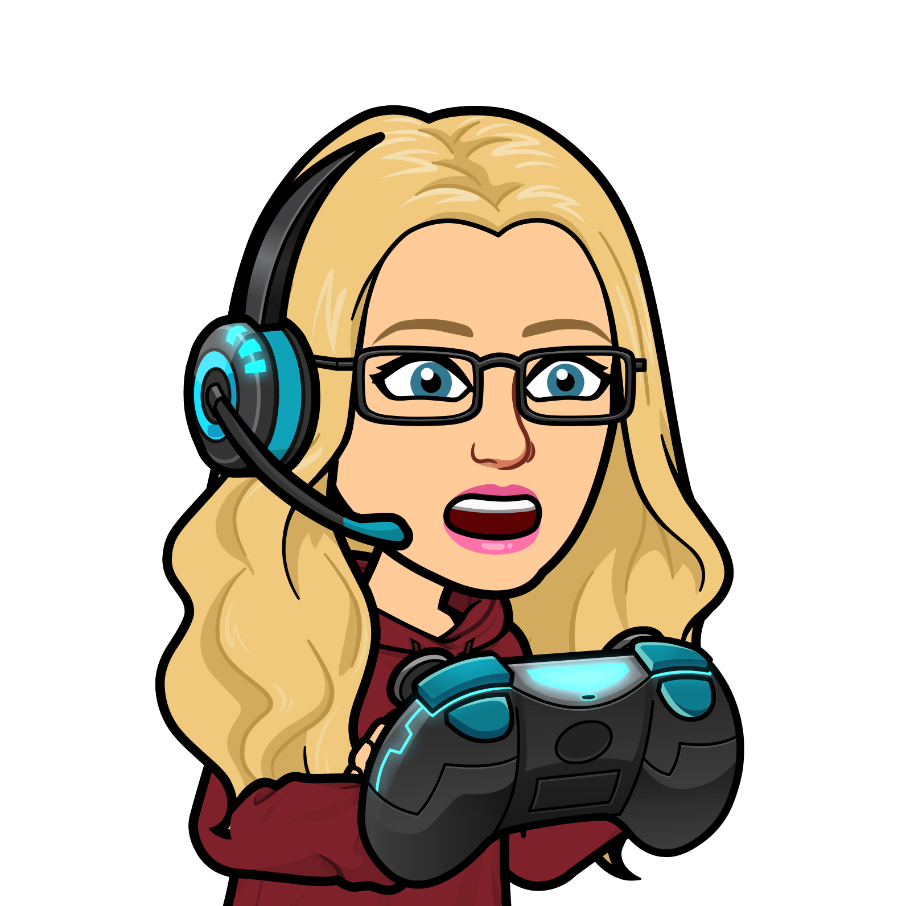

Welcome

Hi, my Name is Ilse. This is pronounced Eel- si (as in sit). That said, I respond to anything that sounds remotely like my name and I won't get offended if you ask me how to pronounce it :).
One fact about me, I really hate taking selfies, but the bitmoji to the top-left pretty much covers it.
I am originally from South Africa, but moved to Auckland when I was 7. I have lived all over Auckland from the North Shore to Pukekohe.
I am super excited about Dev Academy and the skills it will provide me for a career in Tech!